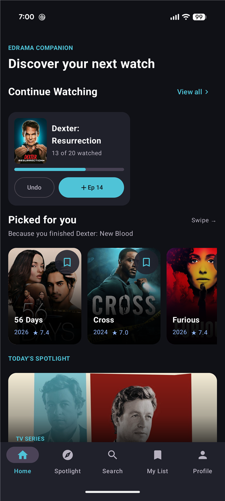
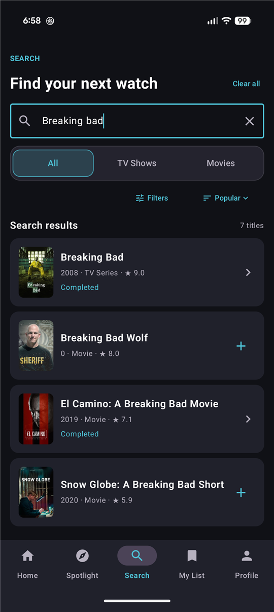
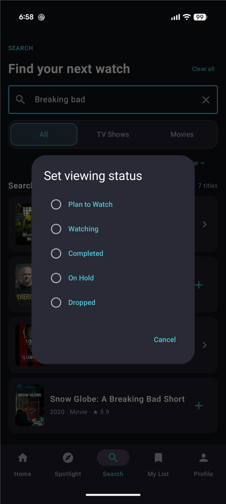
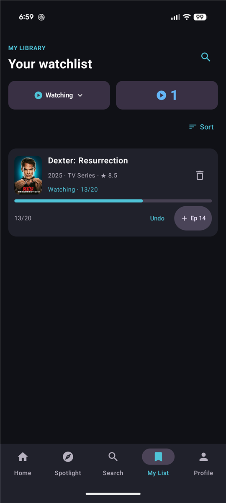
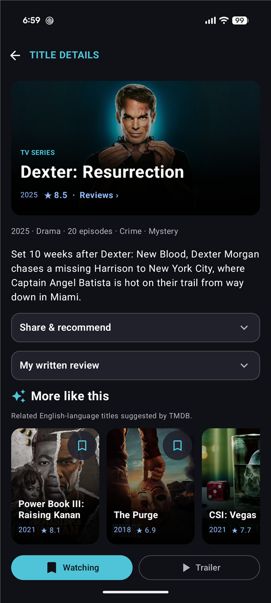
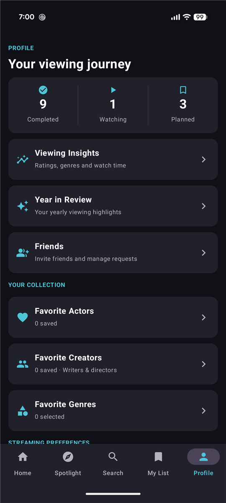
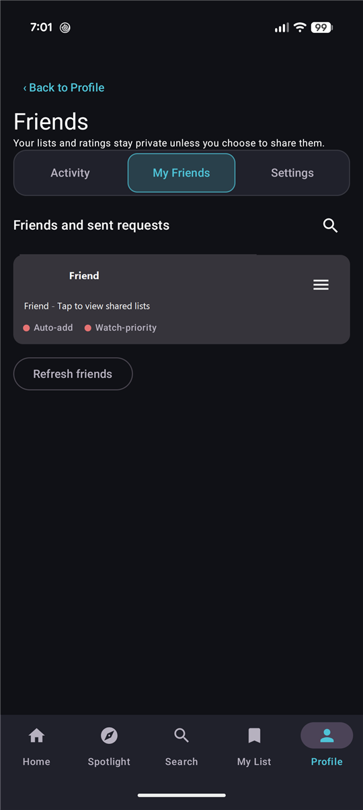

Find something
worth watching.
Browse English-language films and series, search by title or genre, and explore recommendations that reflect your interests.
Sci-fiMysteryFantasyThrillerComedy
Your place for English-language movies and TV shows. Discover new releases, track each episode, save what you want to watch, and build a collection that's yours.

All the familiar organization and discovery tools, adapted for English-language entertainment.
Browse English-language films and series, search by title or genre, and explore recommendations that reflect your interests.
Organize Watching, Plan to Watch, Completed, On Hold, and Dropped titles. Save directly to any list from search.
Mark episodes as watched, record ratings, revisit favorites, and follow your progress across seasons.
Save people and genres you love, then use them to inspire your next watch.
Look back at completed titles, time spent watching, ratings, and yearly highlights.
Connect with friends, share selected lists and ratings, recommend titles, and sync your watchlist with Google. Your sharing choices are always in your control.
Choose the streaming services you use and explore titles with region-specific availability information from TMDb. EDrama is a tracker and discovery app; it does not stream films or episodes itself.

Real screens captured on a Pixel 11 Pro XL. Friend names and profile photos are obscured for privacy.





Browse English-language movies and TV shows you might enjoy.
Use the + button in search to add titles directly to any watchlist category.
Log episodes, rate favorites, and keep your watch history organized.
What to expect from EDrama Companion.
EDrama focuses on English-original-language TV shows and movies, while KDrama Companion focuses on Korean titles. The apps have separate Android packages and separate Firebase projects.
Yes. Watchlists, ratings, episode tracking, and discovery support movies and TV series.
No. It helps you find and track titles. Streaming availability comes from external providers and can vary by region.
EDrama Companion is available to invited internal testers on Google Play. A public listing will be linked after release.
No. The apps use independent Firebase projects and watchlists. EDrama does not automatically access or import your KDrama account data.
EDrama Companion is in Android internal testing. Explore the real app screens and features while we prepare for public release.
Looking for KDrama Companion?